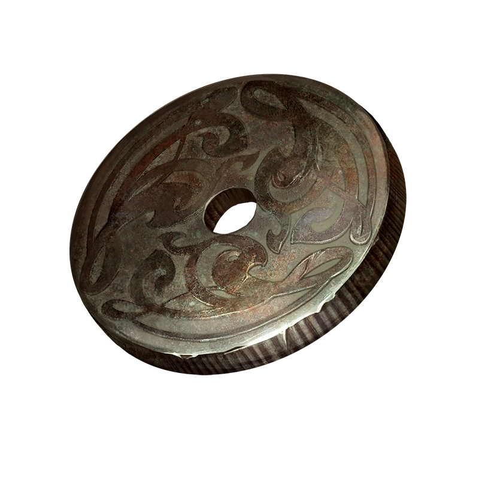

Do you know why ghosts always speak in riddles?
Pathologic is a PC survival game released by Russian game dev studio Ice-Pick Lodge in 2005, which a decade later received a remaster (Pathologic Classic HD) and a remake (Pathologic 2). The Gorkhon Archives is a passion project of mine where I will be cataloguing my thoughts, fanworks, and other resources related to Pathologic.
If you haven't played Pathologic before, I recommend you come back to this website once you've finished playing all three routes of Pathologic Classic HD to avoid spoilers. I truly mean it when I say that this game is best experienced completely blind. What I wouldn't give to wipe my memory of the game and play it again! However, if you are curious and would like a introduction to the game, go ahead and click the What is Pathologic? tab on the navigation bar.
Links to explore...
Information zone

Fan content
-> Discover a random video game website. <-